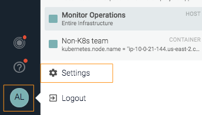

Administration Settings
The Settings panel can be accessed from both Sysdig Monitor and Sysdig Secure UIs, and by both administrator and non-admin users.
Access Settings Panel
Access the panel from the lower left corner of the Sysdig Monitor or Sysdig Secure navigation bar.
|  |
Navigate the Settings Panel: Admin vs User
The administrative tasks for the Sysdig platform are accessed through the Settings panel. Non-admin users have access to some of the pages; administrators have additional rights to manage Users, Teams, and to add licenses.
Logging in as Administrator reveals additional links in the Settings panel:
Administrator Settings | Non-Admin User Settings | ||
|
|